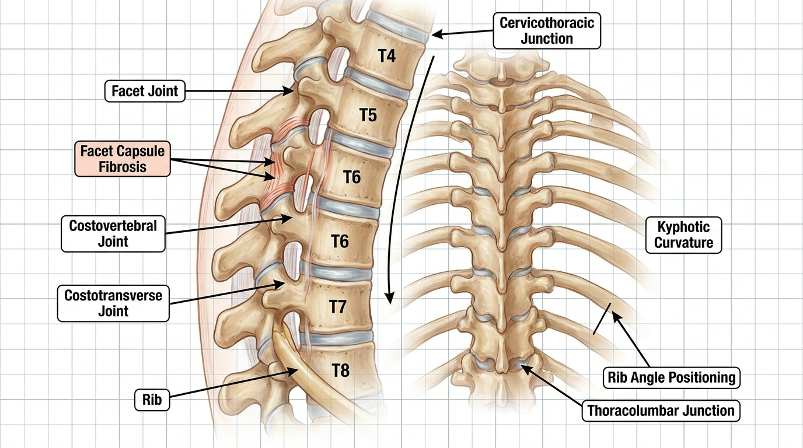

T4-T8 Thoracic Facet Syndrome: Biomechanics of Costovertebral Locking and Interscapular Referred Pain
At Bodyall Korean Medicine Clinic in Ingye-dong, Suwon, T4-T8 mid-thoracic facet syndrome is approached based on the structural mechanism whereby thoracic kyphosis flattening and reduced costovertebral joint gliding induce posterior facet capsule fibrosis. The Biomechanical Spatial Spinal Decompression Chuna Therapy (SART Protocol) is applied to restore mobility to locked joint segments and mitigate compensatory hypermobility in adjacent segments, offering a non-surgical intervention pathway.
Deep, dull discomfort between the shoulder blades is a clinical presentation frequently observed in patients who spend prolonged periods in seated computer work or habitually adopt a slouched upper body posture. Although this pain pattern is often misattributed to simple muscular tension and left untreated, a substantial proportion of these cases actually represent a structural hypomobility lesion originating from posterior facet capsule fibrosis and bilateral costovertebral joint locking at the T4-T8 segments. This document details the pathological mechanism, differential diagnostic criteria, and SART Chuna Protocol-based correction procedure for mid-thoracic facet syndrome as an independent biomechanical entity, clearly distinguished from cervical radiculopathy, lumbar disc herniation, adhesive capsulitis, and cardiac or visceral-referred pain.
Kinematic Chain Mechanism Underlying T4-T8 Segment-Specific Hypomobility
Anatomically, the thoracic spine is connected to the ribs, forming additional articular complexes—the costovertebral and costotransverse joints—not present in the cervical or lumbar spine. When sustained thoracic kyphosis flattening occurs due to prolonged desk-posture loading, or conversely when excessive kyphotic collapse repeats, rotational glide of the rib cage progressively diminishes at the T4-T8 segment, where flexion-rotation coupled motion demand is highest during trunk rotation and arm elevation. This reduced rib cage glide induces repetitive microtrauma to the costotransverse and costovertebral joints, and over time, fibrotic adhesion develops within the bilateral posterior facet capsules, fixating inter-segmental stiffness locally within the T4-T8 region.
Compensatory Hypermobility at Adjacent Cervicothoracic and Thoracolumbar Junctions and the Referred Pain Propagation Pathway
Owing to the nature of the human kinematic chain, the focal hypomobility lesion at T4-T8 does not remain isolated but progresses by transferring load onto adjacent segments. Specifically, the cervicothoracic junction (C7-T1) and the thoracolumbar junction (T9-L1) absorb the motion burden of the locked mid-thoracic segment, resulting in concentrated compensatory hypermobility and shear stress. This process generates a secondary referred pain pattern in the interscapular region, with pain spreading along the posterior dermatomes, and in rare cases, manifesting as anterior chest wall discomfort via the costovertebral-visceral reflex arc, which may be misinterpreted as cardiac-origin symptoms.
Stepwise Thoracic Manual Correction Procedure Based on the SART Chuna Protocol
Addressing this T4-T8-specific lesion requires precise segmental evaluation and a graduated joint distraction procedure. Biomechanical Spatial Spinal Decompression Chuna Therapy (SART Protocol), designed to overcome the limitations of conventional manual therapies by expanding intervertebral disc spaces and neural foramina through biomechanical mechanisms, serves as an essential integrative protocol at Bodyall Korean Medicine Clinic, and is specifically engineered here to precisely release adhesions at the thoracic facet and costovertebral joints. The first stage involves segmental spring testing in the prone position to specifically localize the hypomobile T4-T8 facet level, followed by costovertebral joint mobilization via rib-angle depression and derotation to restore costotransverse glide. The third stage employs bilateral thenar-contact technique for thoracic extension-distraction mobilization to gap the locked joint surfaces and elongate the shortened capsular fibers. Fourth, at the combined rotation-extension end range, segmental rotational thrust technique is applied to selectively release the specific fixated segment while stabilizing adjacent hypermobile segments; finally, following mobilization, thoracic kyphosis curve retraining redistributes axial loading evenly across the restored segments.

A study on spinal manual therapy for mechanical thoracic pain supports the need for manual intervention in focal hypomobility lesions arising from posterior facet capsular fibrosis and costovertebral joint locking at the T4-T8 segments[1]. This aligns academically with the biomechanical principle of gapping locked joint surfaces and elongating shortened capsular fibers through thoracic extension-distraction mobilization and segmental rotational thrust techniques; in particular, the mechanism whereby a focal thoracic lesion induces hypermobility and shear stress at the adjacent cervicothoracic and thoracolumbar junctions suggests that restoring costotransverse glide via rib-angle depression and derotation of the costovertebral joint is clinically relevant for resolving interscapular referred pain[1]. The biomechanical mechanism of capsular adhesion release and range-of-motion restoration in the thoracic region is scientifically explained through the cited academic study, and Bodyall Korean Medicine Clinic, based on this objective mechanism and accumulated Chuna manual therapy clinical experience, applies SART Chuna Therapy as a systematic protocol to promote adhesion release at the costovertebral joint and mobility restoration of the thoracic facet[1].
Differential Diagnosis: Distinguishing from Costochondritis, Intercostal Neuralgia, and Cervicogenic Referred Pain
Accurate diagnosis of mid-thoracic facet syndrome requires prior differentiation from other conditions presenting similar symptoms. Clinically, segmental spring testing confirms reduced spring resilience at a specific thoracic segment, rib spring testing evaluates costovertebral joint hypomobility, and left-right asymmetry in thoracic rotational range of motion is measured. Additionally, cardiac and pulmonary red-flag screening along with radiological evaluation must be concurrently performed to exclude cardiopulmonary origins, thereby establishing the independent diagnosis of T4-T8 facet syndrome as clearly distinct from costochondritis, intercostal neuralgia, and cervicogenic referred pain.
| Comparison Item | T4-T8 Facet Syndrome | Similar Differential Conditions |
|---|---|---|
| Lesion Location | T4-T8 facet and costovertebral joint-specific hypomobility | Cervical nerve root, lumbar disc, shoulder joint capsule |
| Key Examination Findings | Positive segmental spring test, positive rib spring test | Positive neurological examination, generalized restriction in range of motion |
| Pain Propagation Pattern | Interscapular and posterior dermatomal referral | Upper limb radiation, anterior chest wall, local shoulder joint |
| Radiological Exclusion Findings | No cardiac or pulmonary origin abnormality | Possible concurrent ECG or chest imaging abnormality |
Session-by-Session Pain Index Improvement Indicators and Rationale for Concurrent Thoracic Strengthening Exercise
A randomized controlled trial involving patients with thoracic spinal pain reported that combining spinal manipulative therapy significantly improved pain and quality-of-life indices, supporting the biomechanical premise that interscapular referred pain and restricted thoracic rotation arising from T4-T8 segment-specific hypomobility can be alleviated through manual correction[2]. Notably, the significant reduction in pain scores observed during early sessions academically corresponds with the principle wherein prone segmental spring assessment localizes the hypomobile segment, followed by costovertebral joint mobilization and thoracic extension-distraction techniques that restore costotransverse glide[2]. Furthermore, the emphasis in that study on concurrent thoracic strengthening exercise aligns with the description that the post-mobilization thoracic kyphosis curve retraining stage contributes to redistributing axial load in adjacent segments and reducing compensatory shear loading[2]. Based on this academic evidence regarding costovertebral joint locking and posterior facet capsule adhesion, Bodyall Korean Medicine Clinic in Ingye-dong, Suwon, systematically applies a protocol drawing on accumulated Chuna manual therapy clinical experience that combines the SART Chuna procedure with thoracic kyphosis curve retraining to redistribute compensatory loading in adjacent segments[2].
Restoration of Costovertebral Joint Arthrokinematics and Normalization of the Kyphotic Curve Following Correction
💡 Q. What biomechanical changes occur in the costovertebral joint and thoracic kyphosis curve following SART Chuna Therapy?
When costovertebral joint arthrokinematics is restored through graduated costovertebral mobilization and extension-distraction mobilization, costovertebral glide normalizes via rib-angle depression and derotation, allowing the thoracic kyphotic curvature across the T4-T8 segments to be restored in a balanced manner. This restoration of local segmental mobility acts to reduce the compensatory shear load previously concentrated at the adjacent cervicothoracic and thoracolumbar junctions, inducing a structural change that contributes to the alleviation of interscapular referred pain.
The Biomechanical Spatial Spinal Decompression Chuna Therapy (SART Protocol) offered at Bodyall Korean Medicine Clinic in Ingye-dong, Suwon, is positioned as one of the non-surgical conservative treatment alternatives that can be safely considered prior to surgical intervention for interscapular referred pain resulting from T4-T8 costovertebral joint locking and thoracic kyphosis flattening. However, as the etiology of thoracic pain requires diverse differential diagnostic consideration, accurate diagnosis through the aforementioned segmental spring testing and cardiopulmonary exclusion procedures must precede the application of a correction protocol tailored to each individual patient’s lesion presentation.
References
- Schiller, et al. (2001), 'Effectiveness of spinal manipulative therapy in the treatment of mechanical thoracic spine pain: A pilot randomized clinical trial', Journal of Manipulative and Physiological Therapeutics. DOI: 10.1067/mmt.2001.116420
- Waqas, et al. (2023), 'The Effects of Spinal Manipulation Added to Exercise on Pain and Quality of Life in Patients with Thoracic Spinal Pain: A Randomized Controlled Trial', BioMed Research International. DOI: 10.1155/2023/7537335